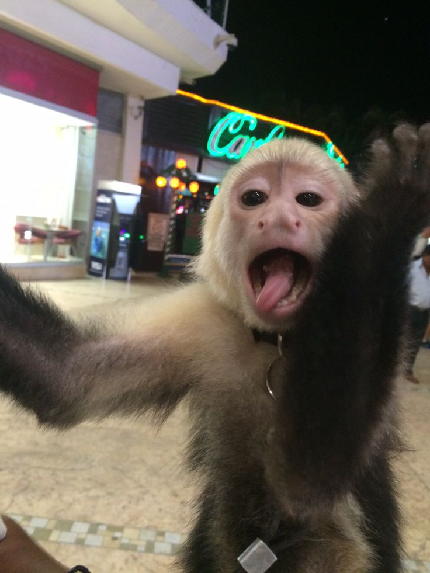

Kapucíni jsou menší opice, které pocházejí hlavně z Jižní a Střední Ameriky. Jsou známí svou inteligencí, zvědavostí a velmi šikovnými tlapkami.

Kapucín má menší tělo, dlouhý ocas a výrazný obličej. Jeho srst bývá většinou hnědá, černá a světlejší kolem obličeje. Dospělý kapucín může vážit přibližně 2 až 4 kilogramy.
Kapucíni jsou všežravci. Živí se hlavně ovocem, semeny, ořechy a hmyzem. Někdy si potravu hledají také pomocí větví nebo kamenů.
Kapucíni jsou velmi chytří a aktivní. Žijí ve skupinách a mezi sebou komunikují různými zvuky a pohyby. Jsou také velmi zvědaví a rychle se učí nové věci.
Kapucín může na první pohled vypadat jako roztomilý domácí mazlíček, ale jeho chov doma není jednoduchý. Potřebuje hodně prostoru, společnost dalších opic, speciální potravu a každodenní péči. Proto není vhodný pro běžný domácí chov.